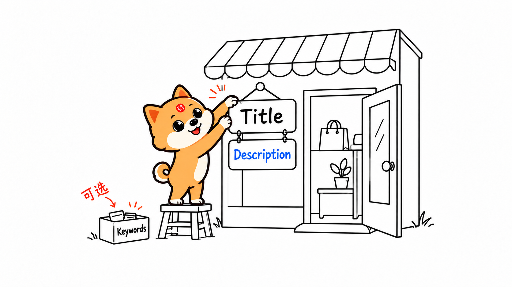
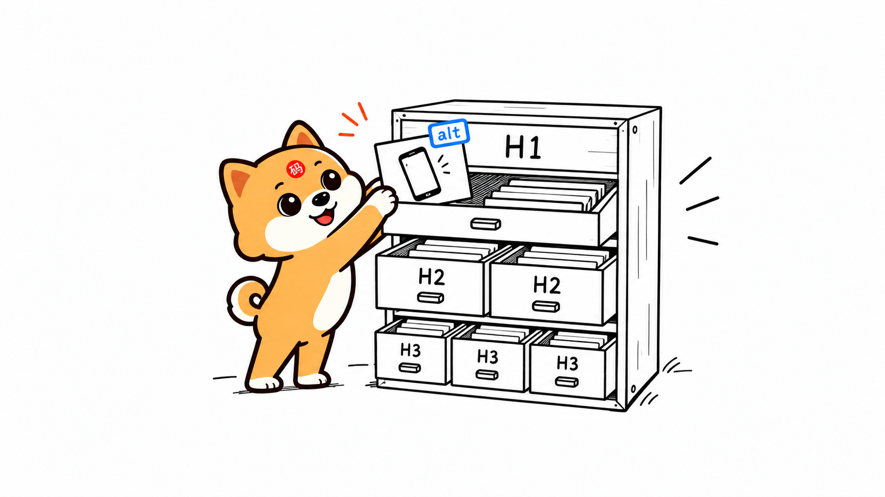
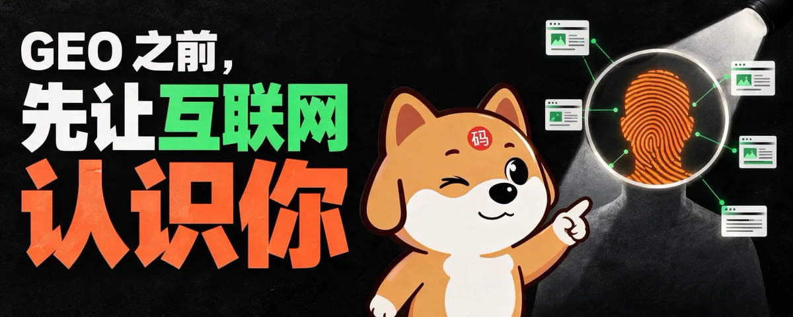
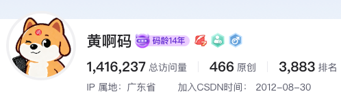
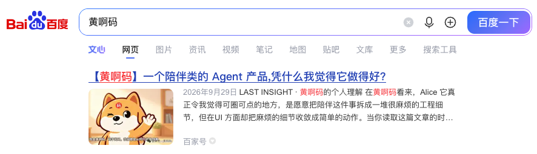
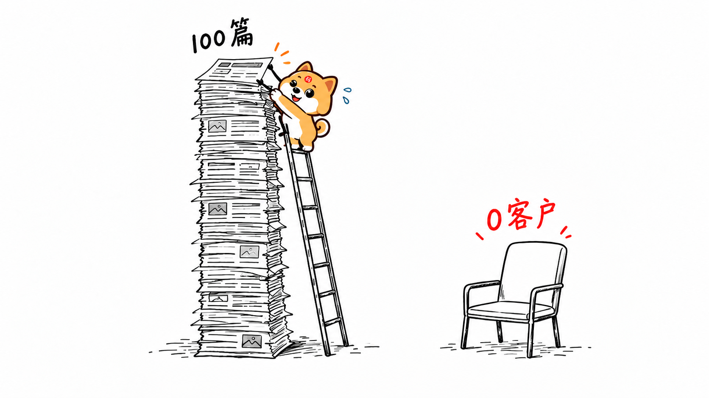
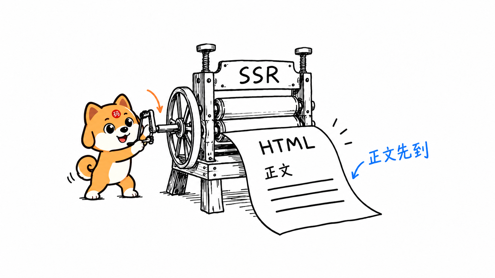
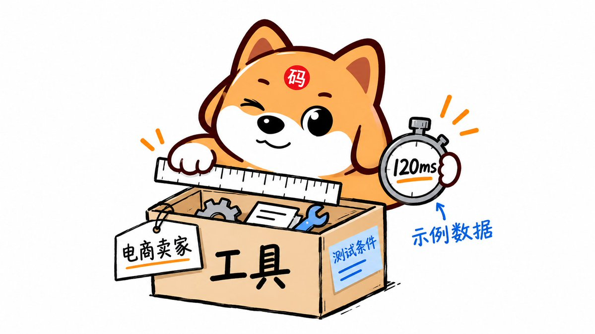

配图与来源
把知识点和图意对应起来
保留五篇文章的 28 张素材位置，其中六张“小黑”图已重新生成并替换为小狗。原文封面中的收入设问、90% 等表达不作为实证；历史截图也不代表当前平台状态。
基础知识 · 新增小狗配图
依据原有正文插画风格生成四张新图，小狗双眼睁开；每张只解释一个基础主题。




你开发的站点，连搜索引擎都不认，这不白干活了吗？一篇文章直接教会你



为什么你的站点更新了上百篇内容，还是换不来一个真实客户？






做了那么多年 SEO，为什么就是做不好 GEO？这篇干货内容全都告诉你


